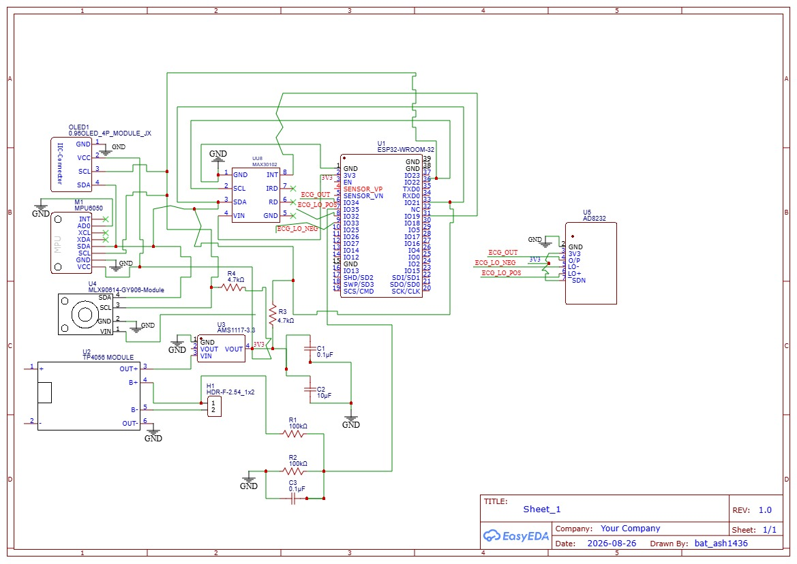

The Hardware
SSAI-SENSE-01.
SSAI-SENSE-01.
Hospital Screening in Your Pocket.
A custom sensor board with cross-shaped 3D-printed enclosure. Under ₹6,000 total cost.

ESP32-WROOM-32
Main MCU — 250 Hz sampling, R-peak detection, BLE radio
AD8232
Single-lead ECG front end — amplifies 1 mV heart signal
MAX30102
Pulse oximetry — HR + SpO₂ via reflectance PPG
MLX90614
Contactless IR temperature — ±0.2°C (DCI variant)
MPU6050
6-axis IMU — fall detection surviving screen-off
19.8h Streaming / 11mo Fall-Watch
3000 mAh 18650 cell with TPS63020 buck-boost
⚡ The Circuit
